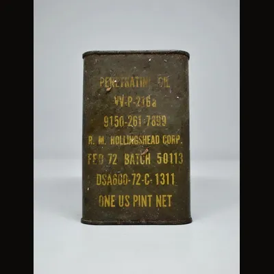
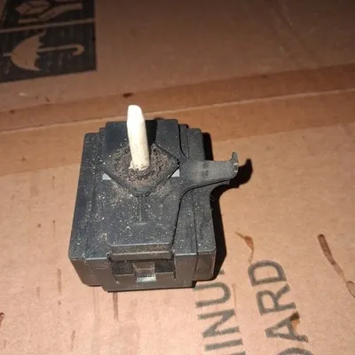
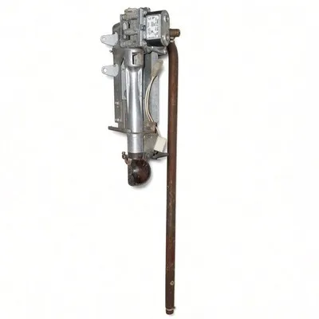
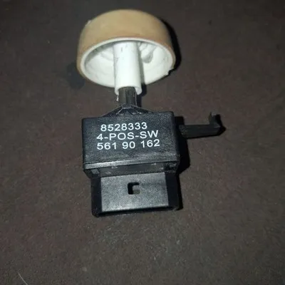
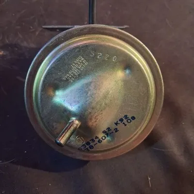

Cans & Buckets
1972 US Military Penetrating Oil Can VV-P-216a Vietnam Era Collectible Used
$17.99
View details7 parts from Whirlpool, mostly washer & dryer parts, cans & buckets and other patio & garden furniture. Each listing shows the part number, condition and photos. Check fitment on the part page before you order.
7 parts
Online checkout through Square. Ships from Carbondale, PA, or pick up by confirmed appointment only. Fitment question? Message us.

$17.99
View details
$21.99
View details
3366847
Interchange 740-9004
$24.99
View details
3954573
Interchange 591M90DEK037
$22.99
View details
8557890
Interchange WP8557890
$59.99
View details
8528333
Interchange WP8528333
$14.99
View details
63834
Interchange 38-607-2
$16.99
View details